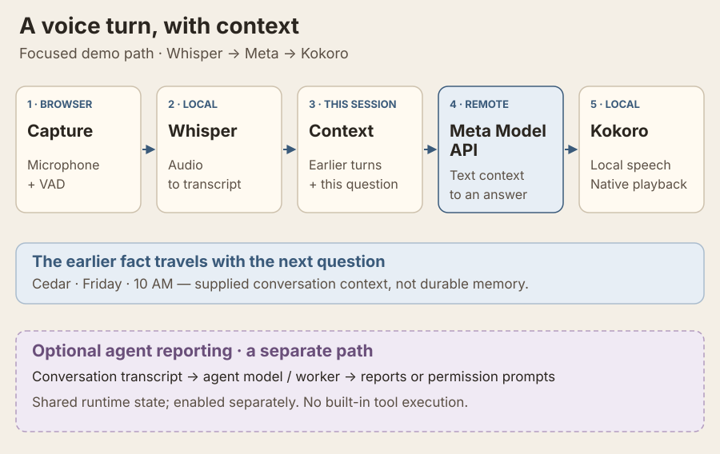
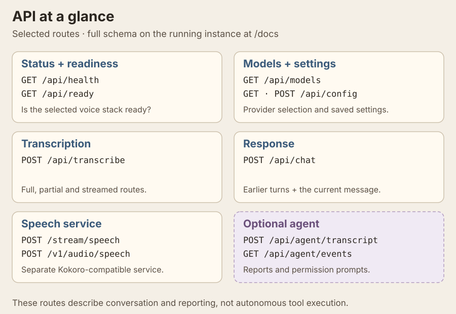

Local-First Voice AI for Design, Code & Collaboration
Browser UI · faster-whisper STT · Response LLM · Kokoro TTS · Agent Side Channel
codex/hackathon-refactor, based on alpha.
These changes are not yet merged into alpha or the release branch.
Setup and rehearsal guide · Progress and verification evidence · Review PR #24.Korina is two related systems sharing one local runtime. Korina Converse is the voice-first design chat channel. Korina Agent is the local-first agent built for it. Korina is designed to keep your voice data and inference on your own hardware — and it can use cloud-compatible endpoints when explicitly configured.
Watch the voice demo → Give Korina a project name and rehearsal time, then ask for both by voice. The latest recording runs fully locally on a Radeon GPU PC: Whistle, Qwen3.5-2B and Kokoro, with actual browser audio and English captions. This is pre-event practice using generated microphone input. Source, observations and limits · Watch the narrated explainer.
Ten-minute illustrated architecture overview, with English narration and captions. About this video and its development snapshot.
Browser-based voice UI: live VAD, rolling partial transcription, response LLM, Kokoro TTS, barge-in, and voice interrupts.
Background agent that receives transcript deltas, maintains compact state, emits reports/events, and asks Converse to inject context or speak interrupts.
The ConverseChannel protocol defines the seam for compatible adapters. The built-in Korina adapter is implemented; external integrations require their own working adapter.
Backend-owned registry at GET /api/capabilities. Responses support llama.cpp, LM Studio, Ollama, Meta Model API, and generic OpenAI-compatible endpoints. Agent settings also support Anthropic-compatible APIs.
Whistle product 9448ac9 passed 1477 Python, 475 Node and 86 native browser checks locally. Test-only fb2ba3f has nine passing hosted jobs; actual PC inference is recorded separately. Exact sources, hosted status and preserved failures.
Hackathon progress and the remaining architecture backlog are tracked in GitHub Issues.
For the separate Meta hackathon profile, choose Meta Model API, an account-enabled response model and a deliberate response budget in Settings. The provider guide and setup instructions cover credentials and local speech services.
Portable paths, shared STT orchestration, bounded agent work, truthful ACK hints and elapsed-time Live speech confirmation that tolerates slower rendering.
The working branch is codex/hackathon-refactor, based on alpha. Review the changes in PR #24; final verification evidence lives in issue #23.
Hear local Qwen recall earlier conversation context, with Whistle transcription and GPU Kokoro. The recording retains waiting time and spoken playback; source, usage and original media are available. Physical headset rehearsal remains.
Ten minutes on Converse, the optional agent, providers, channel adapters and setup. Narrated illustrated overview with English captions; current verification is linked separately.
The diagram below shows the Meta profile with Whisper and Kokoro; the latest PC recording uses local Whistle and GPU Qwen/Kokoro. Korina sends earlier conversation turns with the new question; optional agent reporting runs separately in the shared runtime.

Selected current routes are grouped below. Speech endpoints belong to the separate Kokoro-compatible service. The running backend’s /docs and /openapi.json provide the complete API schema.

master is the release branch promoted from beta after the documented gates pass.
Unit, API, frontend, channel, and packaging checks run independently of model weights. See issue #23 for the current preview’s verification evidence.
Run the read-only scripts/check_stack.py gate first, then real chat and transcription on the demonstration hardware. The retired legacy runner prints replacement commands and performs no runtime operations.